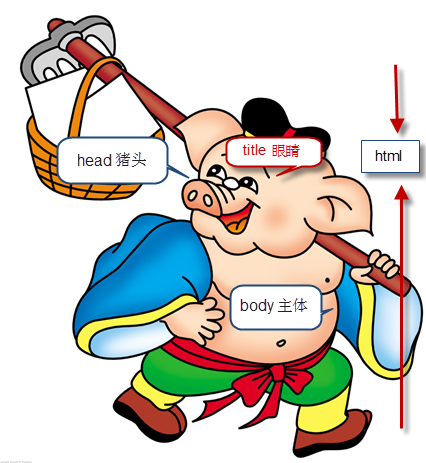
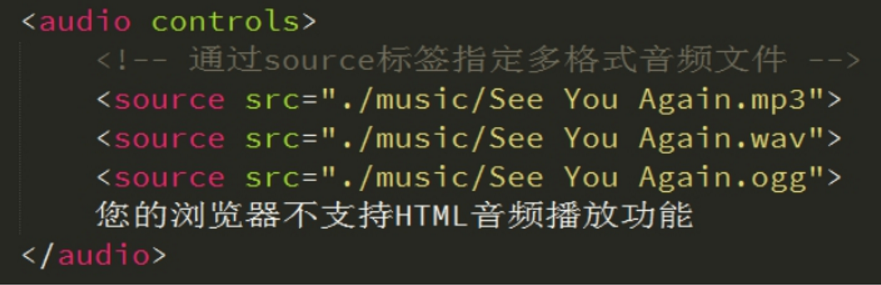

学习目标:
- 了解常用浏览器
- 掌握WEB标准
- 理解标签语义化
- 掌握常用的排版标签
- 掌握常用的文本格式化图像链接等标签
- 掌握三种列表标签
- 掌握表格标签
- 掌握表格标签
- 掌握表单标签
- 掌握H5新增表单和表单属性 typora-copy-images-to: media
认识网页
网页主要由文字、图像和超链接等元素构成。当然，除了这些元素，网页中还可以包含音频、视频以及Flash等。

思考： 网页是如何形成的呢?

常见浏览器介绍
浏览器是网页运行的平台，常用的浏览器有IE、火狐（Firefox）、谷歌（Chrome）、Safari和Opera等。我们平时称为五大浏览器。

查看浏览器占有的市场份额（知晓）
查看网站： http://tongji.baidu.com/data/browser

浏览器内核（理解）
浏览器内核又可以分成两部分：渲染引擎(layout engineer 或者 Rendering Engine)和 JS 引擎。 渲染引擎 它负责取得网页的内容（HTML、XML、图像等等）、整理讯息（例如加入 CSS 等），以及计算网页的显示方式，然后会输出至显示器或打印机。浏览器的内核的不同对于网页的语法解释会有不同，所以渲染的效果也不相同。 JS 引擎 则是解析 Javascript 语言，执行 javascript语言来实现网页的动态效果。
最开始渲染引擎和 JS 引擎并没有区分的很明确，后来 JS 引擎越来越独立，内核就倾向于只指渲染引擎。有一个网页标准计划小组制作了一个 ACID 来测试引擎的兼容性和性能。内核的种类很多，如加上没什么人使用的非商业的免费内核，可能会有10多种，但是常见的浏览器内核可以分这四种：Trident、Gecko、Blink、Webkit。
（1）Trident(IE内核)
国内很多的双核浏览器的其中一核便是 Trident，美其名曰 "兼容模式"。
代表： IE、傲游、世界之窗浏览器、Avant、腾讯TT、猎豹安全浏览器、360极速浏览器、百度浏览器等。
Window10 发布后，IE 将其内置浏览器命名为 Edge，Edge 最显著的特点就是新内核 EdgeHTML。
（2）Gecko(firefox)
Gecko(Firefox 内核)： Mozilla FireFox(火狐浏览器) 采用该内核，Gecko 的特点是代码完全公开，因此，其可开发程度很高，全世界的程序员都可以为其编写代码，增加功能。 可惜这几年已经没落了， 比如 打开速度慢、升级频繁、猪一样的队友flash、神一样的对手chrome。
（3） webkit(Safari)
Safari 是苹果公司开发的浏览器，所用浏览器内核的名称是大名鼎鼎的 WebKit。
现在很多人错误地把 webkit 叫做 chrome内核（即使 chrome内核已经是 blink 了），苹果感觉像被别人抢了媳妇，都哭晕再厕所里面了。
代表浏览器：傲游浏览器3、 Apple Safari (Win/Mac/iPhone/iPad)、Symbian手机浏览器、Android 默认浏览器，
（4） Chromium/Bink(chrome)
在 Chromium 项目中研发 Blink 渲染引擎（即浏览器核心），内置于 Chrome 浏览器之中。Blink 其实是 WebKit 的分支。
大部分国产浏览器最新版都采用Blink内核。
（5） Presto(Opera)
Presto 是挪威产浏览器 opera 的 "前任" 内核，为何说是 "前任"，因为最新的 opera 浏览器早已将之抛弃从而投入到了谷歌怀抱了。

了解一点：
移动端的浏览器内核主要说的是系统内置浏览器的内核。
目前移动设备浏览器上常用的内核有 Webkit，Blink，Trident，Gecko 等，其中 iPhone 和 iPad 等苹果 iOS 平台主要是 WebKit，Android 4.4 之前的 Android 系统浏览器内核是 WebKit，Android4.4 系统浏览器切换到了Chromium，内核是 Webkit 的分支 Blink，Windows Phone 8 系统浏览器内核是 Trident。
Web标准（重点）
通过以上浏览器的内核不同，我们知道他们工作原理、解析肯定不同，显示就会有差别。
问： 哪个语言再全国基本都可以听得懂？

Web 标准的好处
1、让Web的发展前景更广阔 2、内容能被更广泛的设备访问 3、更容易被搜寻引擎搜索 4、降低网站流量费用 5、使网站更易于维护 6、提高页面浏览速度
Web 标准构成
Web标准不是某一个标准，而是由W3C和其他标准化组织制定的一系列标准的集合。主要包括结构（Structure）、表现（Presentation）和行为（Behavior）三个方面。
结构标准：结构用于对网页元素进行整理和分类，主要包括XML和XHTML两个部分。
样式标准：表现用于设置网页元素的版式、颜色、大小等外观样式，主要指的是CSS。
行为标准：行为是指网页模型的定义及交互的编写，主要包括DOM和ECMAScript两个部分
理想状态我们的源码： .HTML .css .js
专业的人，写专业的代码

直观感受：

总结WEB标准：
结构标准：  决定你是否有个好天然身体
决定你是否有个好天然身体
样式标准：  决定你是否打扮的美丽外观
决定你是否打扮的美丽外观
行为标准：  决定你是否有吸引人的行为
决定你是否有吸引人的行为
HTML 初识
一般先学习HTML+CSS， 这里我们先定一个小目标，先学HTML,后学习CSS。
HTML（英文Hyper Text Markup Language的缩写）中文译为“超文本标签语言”，主要是通过HTML标签对网页中的文本、图片、声音等内容进行描述。
<strong> 我是加粗的字体 </strong>
注意： 体会 文本 标签 语言 几个词语
HTML骨架格式
日常生活的书信，我们要遵循共同的约定。

同理：HTML 有自己的语言语法骨架格式：
<HTML>
<head>
<title></title>
</head>
<body>
</body>
</HTML>
课堂练习1： 书写我们的第一个HTML 页面！
- 新建一个demo 的 TXT 文件。
- 里面写入刚才的HTML 骨架。
- 把后缀名改为 .HTML。
- 右击--谷歌浏览器打开。
1 HTML标签：
作用所有HTML中标签的一个根节点。
2 head标签：
作用：用于存放：
title,meta,base,style,script,link
注意在head标签中我们必须要设置的标签是title
3.title标签：
作用：让页面拥有一个属于自己的标题。
4.body标签：
作用：页面在的主体部分，用于存放所有的HTML标签：
p,h,a,b,u,i,s,em,del,ins,strong,img
为了便于记忆，我们请出刚才要辞职回家养猪的二师兄来帮忙， 我称之为 猪八戒记忆法

HTML标签分类
在HTML页面中，带有“< >”符号的元素被称为HTML标签，如上面提到的 <HTML>、<head>、<body>都是HTML标签。所谓标签就是放在“< >” 标签符中表示某个功能的编码命令，也称为HTML标签或 HTML元素
1.双标签
<标签名> 内容 </标签名>
该语法中“<标签名>”表示该标签的作用开始，一般称为“开始标签（start tag）”，“</标签名>” 表示该标签的作用结束，一般称为“结束标签（end tag）”。和开始标签相比，结束标签只是在前面加了一个关闭符“/”。
比如 <body>我是文字 </body>
2.单标签
<标签名 />
单标签也称空标签，是指用一个标签符号即可完整地描述某个功能的标签。
比如 <br />
HTML标签关系
标签的相互关系就分为两种：
1.嵌套关系
<head> <title> </title> </head>

2.并列关系
<head></head>
<body></body>

测试题：
请问下列哪个标签是错误的？
A <head></head><body></body>
B <strong><div></div></strong>
C <head><title></head></title>
D <body><div></div></body>
倡议： 如果两个标签之间的关系是嵌套关系，子元素最好缩进一个tab键的身位。如果是并列关系，最好上下对齐。
开发工具
这些工具你认识几个？

普通青年 Dreamweaver
文艺青年 sublime
高手和傻子 用记事本
其实。。。。

再页面中输入 以下2个单词
1. html: 5
2. !
在sublime里面然后按下tab键盘即可生成HTML骨架
文档类型<!DOCTYPE>
<!DOCTYPE html>
这句话就是告诉我们使用哪个html版本？ 我们使用的是 html 5 的版本。 html有很多版本，那我们应该告诉用户和浏览器我们使用的版本号。
<!DOCTYPE> 标签位于文档的最前面，用于向浏览器说明当前文档使用哪种 HTML 或 XHTML 标准规范，必需在开头处使用<!DOCTYPE>标签为所有的XHTML文档指定XHTML版本和类型，只有这样浏览器才能按指定的文档类型进行解析。
注意： 一些老网站可能用的还是老版本的文档类型比如 XHTML之类的，但是我们学的是HTML5,而且HTML5的文档类型兼容很好(向下兼容的原则)，所以大家放心的使用HTML5的文档类型就好了。
字符集
<meta charset="UTF-8">
utf-8是目前最常用的字符集编码方式，常用的字符集编码方式还有gbk和gb2312。
gb2312 简单中文 包括6763个汉字
BIG5 繁体中文 港澳台等用
GBK包含全部中文字符 是GB2312的扩展，加入对繁体字的支持，兼容GB2312
UTF-8则包含全世界所有国家需要用到的字符
记住一点，以后我们统统使用UTF-8 字符集, 这样就避免出现字符集不统一而引起乱码的情况了。
HTML标签的语义化
白话： 所谓标签语义化，就是指标签的含义。
为什么要有语义化标签
方便代码的阅读和维护
同时让浏览器或是网络爬虫可以很好地解析，从而更好分析其中的内容
使用语义化标签会具有更好地搜索引擎优化
核心：合适的地方给一个最为合理的标签。
语义是否良好： 当我们去掉CSS之后，网页结构依然组织有序，并且有良好的可读性。
不管是谁都能看懂这块内容是什么。
遵循的原则：先确定语义的HTML ，再选合适的CSS。
HTML标签
首先 HTML和CSS是两种完全不同的语言，我们学的是结构，就只写HTML标签，认识标签就可以了。 不会再给结构标签指定样式了。
HTML标签有很多，这里我们学习最为常用的，后面有些较少用的，我们可以查下手册就可以了。
排版标签
排版标签主要和css搭配使用，显示网页结构的标签，是网页布局最常用的标签。
标题标签 (熟记)
单词缩写： head 头部. 标题
为了使网页更具有语义化，我们经常会在页面中用到标题标签，HTML提供了6个等级的标题，即
<h1>、<h2>、<h3>、<h4>、<h5>和<h6>
标题标签语义： 作为标题使用，并且依据重要性递减
其基本语法格式如下：
<hn> 标题文本 </hn>
注意： h1 标签因为重要，尽量少用，不要动不动就向你扔了一个h1。 一般h1 都是给logo使用。

段落标签( 熟记)
单词缩写： paragraph 段落
在网页中要把文字有条理地显示出来，离不开段落标签，就如同我们平常写文章一样，整个网页也可以分为若干个段落，而段落的标签就是
<p> 文本内容 </p>
是HTML文档中最常见的标签，默认情况下，文本在一个段落中会根据浏览器窗口的大小自动换行。
水平线标签(认识)
单词缩写： horizontal 横线
在网页中常常看到一些水平线将段落与段落之间隔开，使得文档结构清晰，层次分明。这些水平线可以通过插入图片实现，也可以简单地通过标签来完成，
就是创建横跨网页水平线的标签。其基本语法格式如下：
<hr />是单标签
在网页中显示默认样式的水平线。
课堂练习2： 新闻页面

换行标签(熟记)
单词缩写： break 打断 ,换行
在HTML中，一个段落中的文字会从左到右依次排列，直到浏览器窗口的右端，然后自动换行。如果希望某段文本强制换行显示，就需要使用换行标签
<br />
这时如果还像在word中直接敲回车键换行就不起作用了。
div span标签(重点)
div span 是没有语义的 是我们网页布局主要的2个盒子
div 就是 division 的缩写 分割， 分区的意思 其实有很多div 来组合网页。
span, 跨度，跨距；范围
语法格式：
<div> 这是头部 </div> <span>今日价格</span>
文本格式化标签(熟记)
在网页中，有时需要为文字设置粗体、斜体或下划线效果，这时就需要用到HTML中的文本格式化标签，使文字以特殊的方式显示。

b i s u 只有使用 没有 强调的意思 strong em del ins 语义更强烈
标签属性

属性就是特性 比如 手机的颜色 手机的尺寸 ，总结就是手机的。。
使用HTML制作网页时，如果想让HTML标签提供更多的信息，可以使用HTML标签的属性加以设置。其基本语法格式如下：
<标签名 属性1="属性值1" 属性2="属性值2" …> 内容 </标签名>
在上面的语法中，
1.标签可以拥有多个属性，必须写在开始标签中，位于标签名后面。
2.属性之间不分先后顺序，标签名与属性、属性与属性之间均以空格分开。
3.任何标签的属性都有默认值，省略该属性则取默认值。
采取 键值对 的格式 key="value" 的格式
比如:
<hr width="400" />
属性 是 宽度
值 是 400
提倡： 尽量不使用 样式属性。 
图像标签img (重点)
单词缩写： image 图像
HTML网页中任何元素的实现都要依靠HTML标签，要想在网页中显示图像就需要使用图像标签，接下来将详细介绍图像标签以及和他相关的属性。其基本语法格式如下：
该语法中src属性用于指定图像文件的路径和文件名，他是img标签的必需属性。
<img src="图像URL" />

链接标签(重点)
单词缩写： anchor 的缩写 。基本解释 锚, 铁锚 的
在HTML中创建超链接非常简单，只需用标签环绕需要被链接的对象即可，其基本语法格式如下：
<a href="跳转目标" target="目标窗口的弹出方式">文本或图像</a>
href：用于指定链接目标的url地址，当为标签应用href属性时，它就具有了超链接的功能。 Hypertext Reference的缩写。意思是超文本引用
target：用于指定链接页面的打开方式，其取值有_self和_blank两种，其中_self为默认值，_blank为在新窗口中打开方式。
注意：
1.外部链接 需要添加 http:// www.baidu.com
2.内部链接 直接链接内部页面名称即可 比如 < a href="index.html"> 首页
3.如果当时没有确定链接目标时，通常将链接标签的href属性值定义为“#”(即href="#")，表示该链接暂时为一个空链接。
4.不仅可以创建文本超链接，在网页中各种网页元素，如图像、表格、音频、视频等都可以添加超链接。
锚点定位 （难点）
通过创建锚点链接，用户能够快速定位到目标内容。 创建锚点链接分为两步：
1.使用“a href=”#id名>“链接文本"</a>创建链接文本。
2.使用相应的id名标注跳转目标的位置。
base 标签
base 可以设置整体链接的打开状态
base 写到 <head> </head> 之间

◀特殊字符标签 （理解）

注释标签
在HTML中还有一种特殊的标签——注释标签。如果需要在HTML文档中添加一些便于阅读和理解但又不需要显示在页面中的注释文字，就需要使用注释标签。其基本语法格式如下：
<!-- 注释语句 -->
注释内容不会显示在浏览器窗口中，但是作为HTML文档内容的一部分，也会被下载到用户的计算机上，查看源代码时就可以看到。
注释重要性：

路径(重点、难点)


实际工作中，通常新建一个文件夹专门用于存放图像文件，这时再插入图像，就需要采用“路径”的方式来指定图像文件的位置。
路径可以分为： 相对路径和绝对路径
相对路径
- 图像文件和HTML文件位于同一文件夹：只需输入图像文件的名称即可，如
<img src="logo.gif" />。 - 图像文件位于HTML文件的下一级文件夹：输入文件夹名和文件名，之间用“/”隔开，如
<img src="img/img01/logo.gif">。 - 图像文件位于HTML文件的上一级文件夹：在文件名之前加入“../” ，如果是上两级，则需要使用 “../ ../”，以此类推，如
<img src="../logo.gif" />。
绝对路径
绝对路径
“D:\web\img\logo.gif”，或完整的网络地址，例如“http://www.itcast.cn/images/logo.gif”。
{kind=link}
列表标签
什么是列表？

把…制成表,以表显示
容器里面装载着文字或图表的一种形式，叫列表。
列表最大的特点就是 整齐 、整洁、 有序
无序列表 ul （重点）
无序列表的各个列表项之间没有顺序级别之分，是并列的。其基本语法格式如下：
<ul>
<li>列表项1</li>
<li>列表项2</li>
<li>列表项3</li>
......
</ul>
比如下面这些，新闻是没有顺序的，不用排队，先到先得，后发布先显示。

脚下留心：
1. <ul></ul>中只能嵌套<li></li>，直接在<ul></ul>标签中输入其他标签或者文字的做法是不被允许的。
2. <li>与</li>之间相当于一个容器，可以容纳所有元素。
3. 无序列表会带有自己样式属性，放下那个样式，一会让CSS来！
有序列表 ol （了解）

有序列表即为有排列顺序的列表，其各个列表项按照一定的顺序排列定义，有序列表的基本语法格式如下：
<ol>
<li>列表项1</li>
<li>列表项2</li>
<li>列表项3</li>
......
</ol>
所有特性基本与ul 一致。
但是实际工作中， 较少用 ol ，因此我们用一句话来总结下 ol：

自定义列表（理解）
定义列表常用于对术语或名词进行解释和描述，定义列表的列表项前没有任何项目符号。其基本语法如下：
<dl>
<dt>名词1</dt>
<dd>名词1解释1</dd>
<dd>名词1解释2</dd>
...
<dt>名词2</dt>
<dd>名词2解释1</dd>
<dd>名词2解释2</dd>
...
</dl>

用的还可以：

总结
每一天都有一个主题 我们HTML第一天的主题就是 <认识标签>
学HTML 之前 觉得 很神秘

等你学完之后忽然发现
总结今天的思路贯穿线：

表格 table(会使用)
存在即是合理的。 表格的现在还是较为常用的一种标签，但不是用来布局，常见处理表格式数据。

ps: 这些地方用表格，你会觉得生活还是那么美好。。。。忍不住想说 PPAP i hava a pen
创建表格
在HTML网页中，要想创建表格，就需要使用表格相关的标签。创建表格的基本语法格式如下：
<table>
<tr>
<td>单元格内的文字</td>
...
</tr>
...
</table>
在上面的语法中包含三对HTML标签，分别为 <table></table>、<tr></tr>、<td></td>，他们是创建表格的基本标签，缺一不可，下面对他们进行具体地解释。
1.table用于定义一个表格。
2.tr 用于定义表格中的一行，必须嵌套在 table /table标签中，在 table /table中包含几对 tr /tr，就有几行表格。
3.td /td：用于定义表格中的单元格，必须嵌套在<tr></tr>标签中，一对 <tr> </tr>中包含几对<td></td>，就表示该行中有多少列（或多少个单元格）。
注意：
1. <tr></tr>中只能嵌套<td></td>
2. <td></td>标签，他就像一个容器，可以容纳所有的元素
表格属性

表头标签
表头一般位于表格的第一行或第一列，其文本加粗居中，如下图所示，即为设置了表头的表格。设置表头非常简单，只需用表头标签<th></th>替代相应的单元格标签<td></td>即可。

表格结构（了解）
在使用表格进行布局时，可以将表格划分为头部、主体和页脚（页脚因为有兼容性问题，我们不在赘述），具体 如下所示：
<thead></thead>：用于定义表格的头部。
必须位于<table></table> 标签中，一般包含网页的logo和导航等头部信息。
<tbody></tbody>：用于定义表格的主体。
位于<table></table>标签中，一般包含网页中除头部和底部之外的其他内容。

合并单元格
跨行合并：rowspan 跨列合并：colspan
合并单元格的思想：
将多个内容合并的时候，就会有多余的东西，把它删除。 例如 把 3个 td 合并成一个， 那就多余了2个，需要删除。
公式： 删除的个数 = 合并的个数 - 1
总结表格
- 表格提供了HTML 中定义表格式数据的方法。
- 表格中由行中的单元格组成。
- 表格中没有列元素，列的个数取决于行的单元格个数。
- 表格不要纠结于外观，那是CSS 的作用。
表单标签(掌握)
现实中的表单，类似我们去银行办理信用卡填写的单子。 如下图

目的是为了收集用户信息。
在我们网页中， 我们也需要跟用户进行交互，收集用户资料，此时也需要表单。
在HTML中，一个完整的表单通常由表单控件（也称为表单元素）、提示信息和表单域3个部分构成。

表单控件：
包含了具体的表单功能项，如单行文本输入框、密码输入框、复选框、提交按钮、重置按钮等。
提示信息：
一个表单中通常还需要包含一些说明性的文字，提示用户进行填写和操作。
表单域：
他相当于一个容器，用来容纳所有的表单控件和提示信息，可以通过他定义处理表单数据所用程序的url地址，以及数据提交到服务器的方法。如果不定义表单域，表单中的数据就无法传送到后台服务器。
input 控件(重点)
在上面的语法中，<input />标签为单标签，type属性为其最基本的属性，其取值有多种，用于指定不同的控件类型。除了type属性之外，<input />标签还可以定义很多其他的属性，其常用属性如下表所示。

label标签(理解)
label 标签为 input 元素定义标注（标签）。
作用： 用于绑定一个表单元素, 当点击label标签的时候, 被绑定的表单元素就会获得输入焦点
如何绑定元素呢？
for 属性规定 label 与哪个表单元素绑定。
<label for="male">Male</label>
<input type="radio" name="sex" id="male" value="male">
textarea控件(文本域)
如果需要输入大量的信息，就需要用到<textarea></textarea>标签。通过textarea控件可以轻松地创建多行文本输入框，其基本语法格式如下：
<textarea cols="每行中的字符数" rows="显示的行数">
文本内容
</textarea>

下拉菜单
使用select控件定义下拉菜单的基本语法格式如下
<select>
<option>选项1</option>
<option>选项2</option>
<option>选项3</option>
...
</select>
注意：
- <select></select>中至少应包含一对<option></option>。
- 在option 中定义selected =" selected "时，当前项即为默认选中项。
表单域
在HTML中，form标签被用于定义表单域，即创建一个表单，以实现用户信息的收集和传递，form中的所有内容都会被提交给服务器。创建表单的基本语法格式如下：
<form action="url地址" method="提交方式" name="表单名称">
各种表单控件
</form>
常用属性：
- Action 在表单收集到信息后，需要将信息传递给服务器进行处理，action属性用于指定接收并处理表单数据的服务器程序的url地址。
- method 用于设置表单数据的提交方式，其取值为get或post。
- name 用于指定表单的名称，以区分同一个页面中的多个表单。
注意： 每个表单都应该有自己表单域。
HTML5新标签与特性
文档类型设定
- document
- HTML:
- XHTML:
- HTML5
字符设定
- ：HTML与XHTML中建议这样去写
- ：HTML5的标签中建议这样去写
常用新标签
- header：定义文档的页眉
- nav：定义导航链接的部分
- footer：定义文档或节的页脚
- article：标签规定独立的自包含内容
- section：定义文档中的节（section、区段）
- aside：定义其所处内容之外的内容
常用新属性
| 属性 | 用法 | 含义 |
|---|---|---|
| placeholder | <input type="text" placeholder="请输入信息"> |
占位符提供可描述输入字段预期值的提示信息 |
| autofocus | <input type="text" autofocus> |
规定当页面加载时 input 元素应该自动获得焦点 |
| multiple | <input type="file" multiple> |
多文件上传 |
| autocomplete | <input type="text" autocomplete="off"> |
规定表单是否应该启用自动完成功能 |
| required | <input type="text" required> |
必填项 |
| accesskey | <input type="text" accesskey="s"> |
规定激活（使元素获得焦点）元素的快捷键 |
新增的type属性值：
| 类型 | 使用示例 | 含义 |
|---|---|---|
<input type="email"> |
输入邮箱格式 | |
| tel | <input type="tel"> |
输入手机号码格式 |
| url | <input type="url"> |
输入url格式 |
| number | <input type="number"> |
输入数字格式 |
| search | <input type="search"> |
搜索框（体现语义化） |
| range | <input type="range"> |
自由拖动滑块 |
| time | <input type="time"> |
定义日期字段的时、分、秒（带有 time 控件） |
| date | <input type="date"> |
定义日期字段（带有 calendar 控件） |
| datetime | <input type="datetime"> |
定义日期字段（带有 calendar 和 time 控件） |
| month | <input type="month"> |
定义日期字段的月（带有 calendar 控件） |
| week | <input type="week"> |
定义日期字段的周（带有 calendar 控件） |
HTML 5 <input> 标签: https://www.w3school.com.cn/html5/tag_input.asp
综合案例
<form action="">
<fieldset>
<legend>学生档案</legend>
<label for="userName">姓名:</label>
<input type="text" name="userName" id="userName" placeholder="请输入用户名"> <br>
<label for="userPhone">手机号码:</label>
<input type="tel" name="userPhone" id="userPhone" pattern="^1\d{10}$"><br>
<label for="email">邮箱地址:</label>
<input type="email" required name="email" id="email"><br>
<label for="collage">所属学院:</label>
<input type="text" name="collage" id="collage" list="cList" placeholder="请选择"><br>
<datalist id="cList">
<option value="前端与移动开发学院"></option>
<option value="java学院"></option>
<option value="c++学院"></option>
</datalist><br>
<label for="score">入学成绩:</label>
<input type="number" max="100" min="0" value="0" id="score"><br>
<label for="level">基础水平:</label>
<meter id="level" max="100" min="0" low="59" high="90"></meter><br>
<label for="inTime">入学日期:</label>
<input type="date" id="inTime" name="inTime"><br>
<label for="leaveTime">毕业日期:</label>
<input type="date" id="leaveTime" name="leaveTime"><br>
<input type="submit">
</fieldset>
</form>
多媒体标签
embed：标签定义嵌入的内容
audio：播放音频
video：播放视频
多媒体 embed（会使用）
embed可以用来插入各种多媒体，格式可以是 Midi、Wav、AIFF、AU、MP3等等。url为音频或视频文件及其路径，可以是相对路径或绝对路径。
因为兼容性问题，我们这里只讲解 插入网络视频， 后面H5会讲解 audio 和video 视频多媒体。
<embed src="http://player.youku.com/player.php/sid/XMTI4MzM2MDIwOA==/v.swf" allowFullScreen="true" quality="high" width="480" height="400" align="middle" allowScriptAccess="always" type="application/x-shockwave-flash"></embed>

优酷，土豆，爱奇艺，腾讯、乐视等等
- 先上传
- 在分享
多媒体 audio
HTML5通过<audio>标签来解决音频播放的问题。
使用相当简单，如下图所示

并且可以通过附加属性可以更友好控制音频的播放，如：
autoplay 自动播放
controls 是否显不默认播放控件
loop 循环播放 loop=“-1”无限循环播放 loop=“2”播放两次
由于版权等原因，不同的浏览器可支持播放的格式是不一样的，如下图供参考

多浏览器支持的方案，如下图

多媒体 video
HTML5通过<video>标签来解决音频播放的问题。
同音频播放一样，<video>使用也相当简单，如下图
同样，通过附加属性可以更友好的控制视频的播放
autoplay 自动播放
controls 是否显示默认播放控件
loop 循环播放
width 设置播放窗口宽度
height 设置播放窗口的高度
由于版权等原因，不同的浏览器可支持播放的格式是不一样的，如下图供参考
多浏览器支持的方案，如下图

总结
HTML 第二天的主题：
熟悉列表--- 会使用表格 --- 掌握常用表单